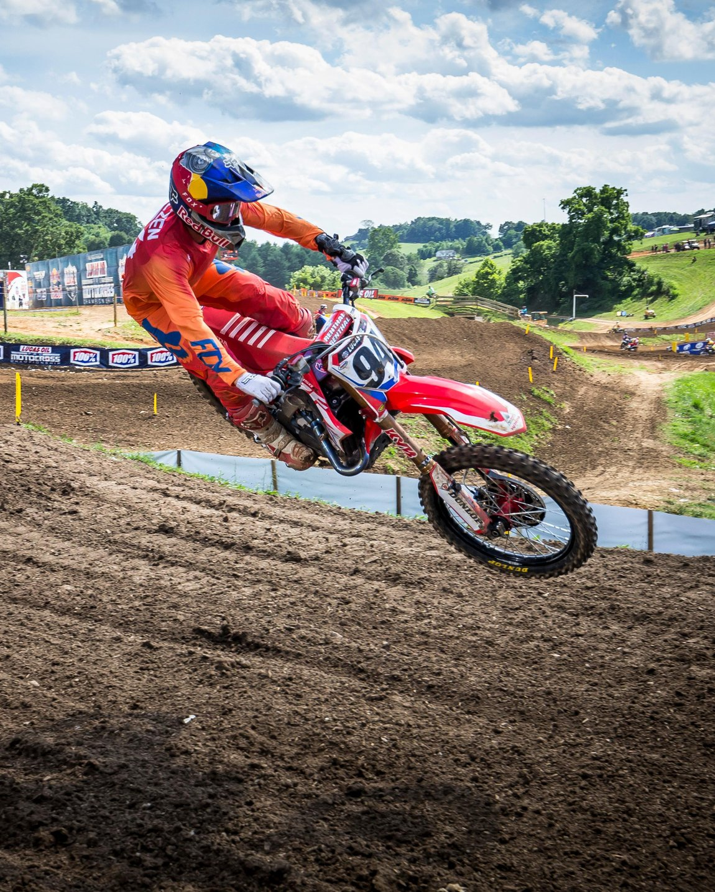

Mijn naam is Oscar Kudlik, ik ben 16 jaar oud en zit op ROC de leijgraaf.
Ik woon in Veghel. Mijn grootste hobby's zijn computers, games, motocross en boxen.
Ik ben begonnen met motcross in 2017, mijn eerste motor was een KTM sx 125. Daarna had ik een KTM sx 144. Helaas ben ik eind 2018 gestopt met motocross.